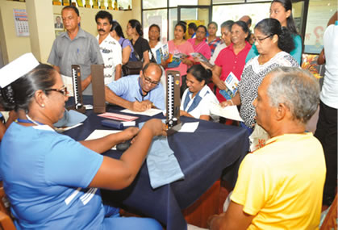
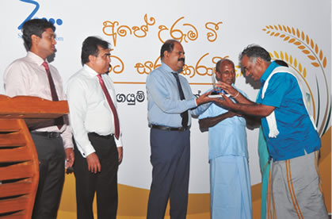
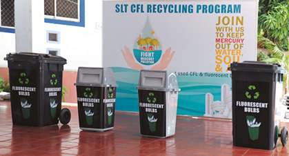

Social and environmental capital
SLT, as the national ICT service provider in Sri Lanka, is a responsible corporate citizen. We believe in giving back to the community. SLT has become an important participant in the communities it operates in. Our exemplary care also extends to the environment. The digital transformation that SLT is undergoing will directly support the UN Sustainable Development Goals as environmental protection is embedded in the digital sphere. Our CSR programmes are designed and executed under the strict framework of the SDGs. Our strategic direction outlined in the SLT Group Vision 2022 is committed to aligning our business operations and strategies to the universally acceptable principles.
We firmly believe that the digital world should be open to everyone. With that objective in mind, we actively work towards reducing the “digital gap” to promote the ease and convenience of digitisation to the common public. We support and initiate a number of social projects that are geared towards achieving this objective.
SLT’s social responsibility policy
Our social responsibility policy aims to bring together all our corporate social responsibility (CSR) activities, optimise the utilisation of financial resources and maintain international standards for the internal processes and systems.
SLT is an important participant in the community
160 School Development Programme
To celebrate our 160 year anniversary, SLT implemented the special community outreach project: “160 School Development Programme” to contribute to the well-being of the Sri Lankan society. The project's focus was to provide ICT infrastructure: broadband connection with 12-month rental free with a free Wi-Fi router. We also conducted awareness programmes and lectures on ICT (which is offered as a subject for Ordinary Level Examinations). We also provided books to the school libraries. It also included awareness programmes on SLT’s recycling of CFL and fluorescent tube lights to prevent the adding of mercury into the environment.
The “160 School Development Programme” was held at 197 schools island-wide in Sinhala and Tamil languages with the participation of more than 12,000 students, teachers of respective schools, and some zonal education officers. The following are some of the key areas covered by the programme: Anuradhapura, Gampola, Kandy, Hambantota, Elpitiya, Matara, Chillaw, Nuwara Eliya, Bandarawela, Dambulla, Hatton, Ranna, Kegalle, Puttalam, Moneragala, Ginigathhena, Ratnapura, Hokandara, Badalkumbura, etc.
“Sisu Abhiman ” programme recognises top achievers in the GCE A/L Examination
Under the
Book donation programme
SLT and the Asia Foundation collaborated to help the proliferation of English language education and professional education in Sri Lanka. We have donated over 100,000 books yearly. Last year, the agreement between SLT and the Asia Foundation was renewed for the 13th consecutive year.
SLT Customer clubs have gone from strength to strength
The customer 2.0 is not only digital savvy but greatly aware of the present needs of the society and the environment. They believe in creating a sustainable society and environment for the future generation. The SLT Group has a customer base of over six million in Sri Lanka. We have recognised that our customers wish to give back and therefore, we work together towards the betterment of the country. The SLT Customer Club initiative was created to empower our customers and provide them an outlet for their altruism. Though they are under our purview, we have given complete autonomy and independence to the executive committees of these clubs. At present, there are 20 customer clubs. In 2017, there were 92 meetings held and 22 CSR events were organised by the SLT Customer Clubs.
Programmes and activities covered knowledge sharing sessions on the following topics: disaster management, road safety, good food habits for schoolchildren, and water container distribution project for rural villages. There were motivation programmes held for thalassaemia-affected children. There was a drama show organised for children at an orphanage, elderly citizens, and disabled soldiers.

Protecting our heritage through the “Ape Uruma Vee ” project

The 2017 calendar of SLT was produced under the theme “Preserving heritage for tomorrow” and a sub-theme “Traditional Rice of Sri Lanka” . Our aim was to raise awareness about preserving our rich heritage, especially our ancient methods of cultivation. As a part of this programme, SLT implemented a particular CSR project to preserve traditional rice varieties in Sri Lanka.
Under this project cultivation of traditional rice was carried out in 80 villages. More than 40 acres were cultivated in 19 districts which resulted in farmers gaining over 40,000 kg of traditional rice. A competition was also held to encourage farmers. It was judged by personnel from the Food Production National Programme at the Presidential Secretariat.
We provided assistance when the nation was in need
The SLT Group carried our various programmes during flood and drought times in the year 2017. Our technical teams worked throughout the day with the local agencies and DMS. We offered mobile phones for free to agency officers and free credit to all Mobitel users in the affected areas. In the aftermath of the disaster we helped clean the wells to ensure clean water and we implemented a disaster relief programme in collaboration with the Ministry of Telecommunication.
Supporting sports
The SLT Group understands that sports play a vital role in teaching our children fundamental values like a strong work ethic, teamwork, and good sportsmanship. SLT Mobitel sponsors national level and school level rugby, rugby 7s tournaments, and many other school rugby events. We also sponsored Sunday Observer Schoolboy Cricketer of the Year for the 13th consecutive year. As mentioned above, throughout the year, we have promoted e-sports and e-sporting events throughout the country.
Bolstering national healthcare
In our effort to bolster the national healthcare services, we acquired eChanelling PLC. Together with eChannelling and other government institutes, SLT Mobitel conducted health camps across the island. The following steps were taken throughout the last year to support national health care services:
- Spectacle donation camps (Over 20,000 spectacles were donated).
- Human tissue donor registration programmes.
- Communication platform for the Organ Transplant Unit.
- Kidney awareness campaign.
- Dengue awareness campaigns.
- Wi-Fi capability was introduced to the National Cancer Institute.
- A dedicated hotline was launched for the Diabetics Unit.
- Sri Lanka’s first ever medical hackathon “MedHack” was organised to innovate solutions for the health sector.
Collaboration with healthcare bodies
SLT Mobitel collaborated with the University of Kelaniya and Arthur C. Clarke Institute for Modern Technologies to launch two interactive mobile apps for stoma care and breast cancer care. These apps have been developed as a platform for communication between consultants, respective care nurses, and their patients, both on an individual and a country-wide basis. They will serve as a platform for patient education and training in stoma care and breast cancer care. Furthermore, data obtained from such an app would provide opportunities for research in medicine and healthcare.
Religious programmes
The SLT Group conducted various religious programmes throughout the year.
Manudam Paramitha programmes – 2017
Nethrabhimana
SLT Mobitel together with Sri Lanka Federation of the Visually Handicapped launched “
Planting of Bo Trees
SLT donated 28 sacred Bo plants to temples for planting. This was to commemorate 28 lord Buddha and also an initiative directed towards environment protection.
SLT celebrates Ifthar and Christmas
We held Ifthar celebrations at Kalutara with the participation of a large number of people. School bags and stationeries were also donated to 125 students. Further, SLT provided books to the library of Musilm Balika Vidyalaya – Kalutara.
Christmas was celebrated at
SLT is committed to preserve the environment
As mentioned above, we are cognisant of the fact that our operations inevitably impact on the environment in a number of ways. Thus, we are committed to mitigate any adverse effects on the environment and operate in a manner that is environmentally responsible and economically sustainable.
Our digital transformation, where we envision to increase the revenue from digital services to as much as 15% of our overall operations, leads to the protection of the environment. Digitalisation will automatically eliminate the need for paper-based systems and storage space. Similarly, our e-work, e-commerce, e-health, e-learning, and e-banking conversions help minimise the carbon footprint by contributing to, amongst other factors, decreases in transport and commuting, and saving physical space.
We promote eco-friendly gift items in our gift shops; which are crafted by local artisans. This helps in contributing to their sustainable livelihoods as well as helping in the recycling of material.
The following are initiatives undertaken by the SLT Group towards the preservation of the environment in 2017:
World Environment Day Commemoration Programme
To commemorate the World Environment Day the SLT Energy Council organised an awareness session titled “Nature, Environment and Importance of World Environment Day” on 5 June 2017. The seminar was conducted by Mr Nimal Perera, an expert in the field.
Energy management
Using our resources efficiently makes sound environmental and economic sense. That is why we are exploring new ways of improving our energy efficiency to reduce our emissions while saving costs.
We engaged in the following measures throughout the year:
The fluorescent tube lights and CFL bulbs were replaced with energy-efficient LED lighting on our premises.
We launched an experimental project to study the viability of using solar power as the main source for several service access gateways. Under this scheme 17 sites were inspected.
SLT contributes to saving over 96 million litres of water from pollution
SLT implemented a CFL and FTL recycling programme to prevent environmental pollution and to help preserve the ecological balance. The main objective behind the project was to keep mercury out of the environment. Under Phase I of this programme, during the last six months, the Company has successfully collected a total of 3,217 CFL and fluorescent tube lamps for recycling from the Company's head office as well as from the Company’s head office employees. This amounts to a total of 16,152,000 litres of water being saved from mercury pollution. Under Phase II, SLT has extended this programme to collect CFL and FTL bulbs for recycling from its regional offices and employees of regional offices islandwide. We reduced over 12,868mg. of mercury from being added to the environment and protected 96 million litres of water. Under Phases III and IV, the company expects to extend this to SLT's customers and then to the general public.

Employee awareness programmes
We regularly conduct employee awareness programmes to enlighten our staff in the best practices in preserving the environment and the importance of conservation. These programmes will be implemented this year as well.